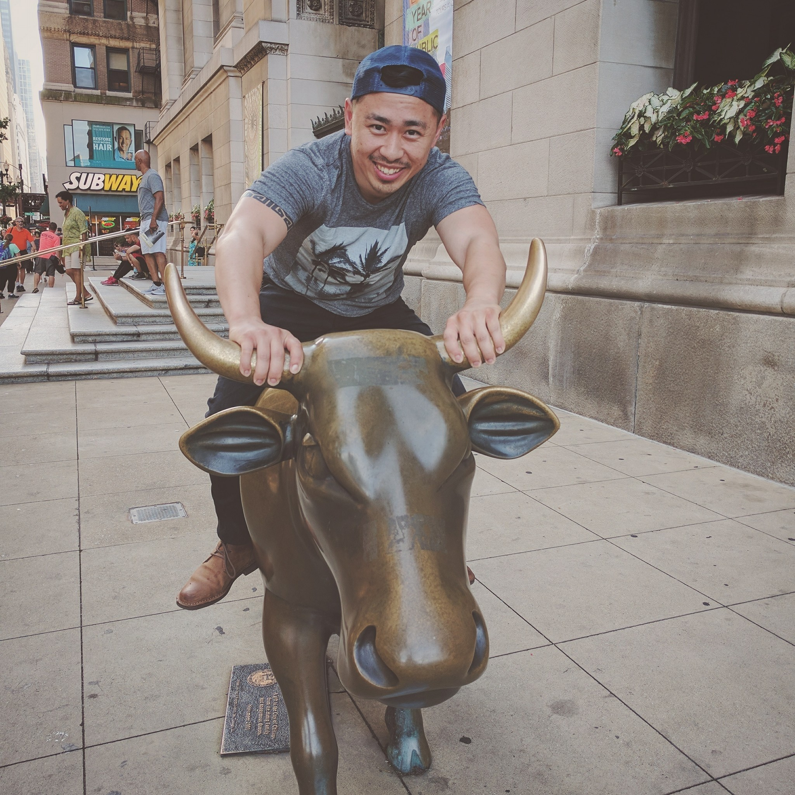

About Me

MICHAEL YANG is a student in the UMN Coding Bootcamp, cohort March 2018, class ???. Prior to enrollment, he worked as a Policy Aide in the Minneapolis City Council. Yang is also a filmmaker, graphic artist, and photographer with a collection of work that still needs to be pushed out to his online portfolio at MediaByMichael. When he's not working he lounges around, then unlounges to read, write, or work out at the gym on a semi-somewhat-regular basis. He's enjoys fine-crafted locally brewed beer, good food, better company, some fresh air and lots of sunshine. Yang looks forward to surviving bootcamp and the eventual tapping in to a plethora of tech-portunities he was unqualified for just a year ago. Additionally, he looks forward to road-tripping out West upon graduation.